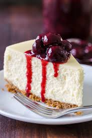

Sweet cheese pancakes
A light and gently sweet breakfast dish or a dessert for picky eaters. With
crispy coating and the light and soft inside, you get a lovely balance of
flavors and textures.These delicious pancakes pair perfectly with sour cream
and fruit in pretty much any form.
Ingredients
Instructions
- Mix all ingredients
- Heat a non-stick pan over medium heat and add a small amount of oil to coat the surface.
- Using a spoon, drop small portions of the batter onto the pan, forming small pancakes. Cook until golden brown on both sides.
- Serve warm with sour cream and your favorite fruit preserves or fresh fruit.
Author's profile